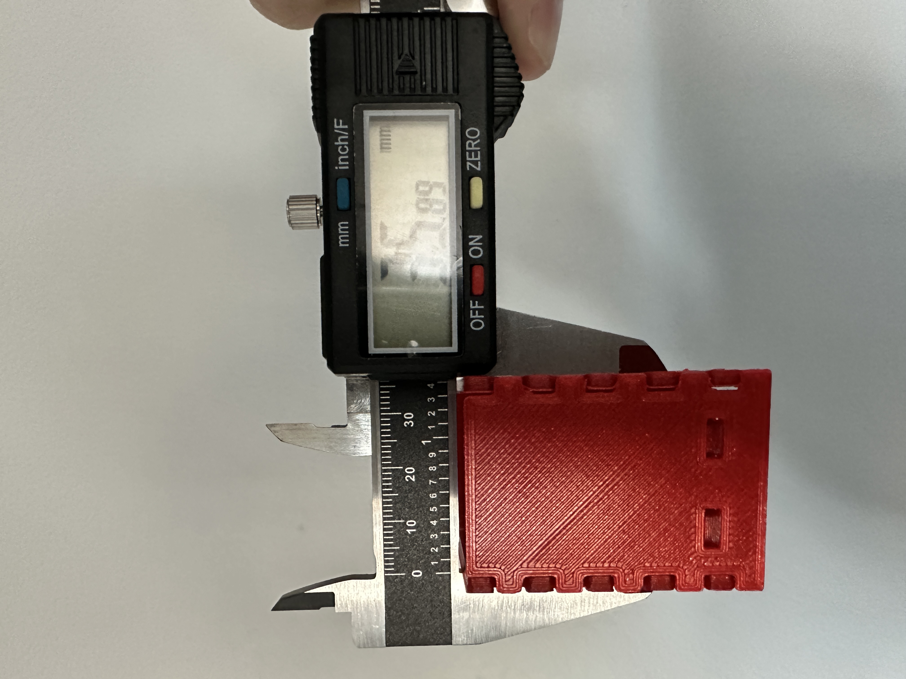

A4: Subtractive Manufacturing
by Kefeng Wang in HCDE598

| Width | Height |
|---|---|
| 35.89 mm (35mm in rhino) | 49.77 mm (49mm in rhino) |
|  |
the whole box has 5 pieces: a bottom piece, two pieces of Wall A, and two pieces of the Wall B.
Here are some details about Wall A and Wall B:
Each wall piece has two holes placed 7mm away from its bottom. Each hole is 7mm in width and 3mm in height. The reason for creating these holes is that they could help the bottom piece to attach wall pieces together tightly.
Here are some details about the bottom piece:
All pieces are 3mm in thickness. While during the test printing, I noticed that the width is nomally 0.4mm larger on each side. Because of this error, there are some cracks for my box.
Here is all the documentation for assignment 4!
You can go back to the HOME PAGE from here.